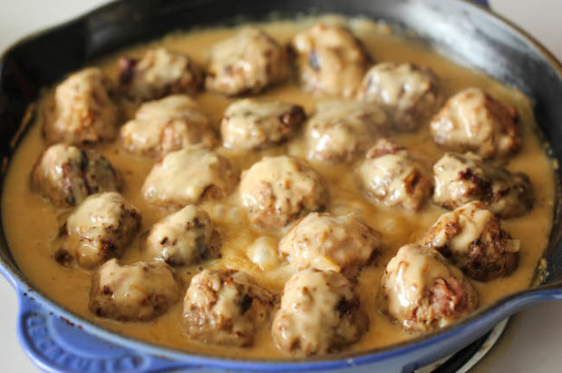

Köttbullar - Recept

Förberedelse: X min
Tillagning: Y min
Portioner: Z st
Ingredienser
- 500 g köttfärs
- ½ dl ströbröd
- 1 dl matlagningsgrädde
- 2 msk finhackad lök
- 1 ägg
- 1 tsk salt
- 1 krm svartpeppar
- 2 msk smör- & rapsolja
Anvisningar
- Blanda ströbröd och grädde.
- Låt svälla 10 min.
- Lägg i färs, lök, ägg, salt och peppar.
- Rör till en jämn smet.
- Forma smeten till jämna bullar.
- Stek dem i smör-&rapsolja på medelvärme 3-5 min.
Kommentarer
Kalle
Riktigt smarriga köttbullar! 5/7